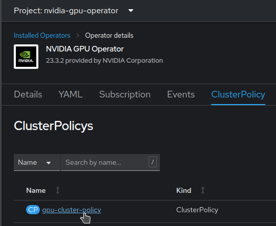

Working with GPUs
Using NVIDIA GPUs on OpenShift
How does this work?
NVIDIA GPUs can be easily installed on OpenShift. Basically it involves installing two different operators.
The Node Feature Discovery operator will "discover" your cards from a hardware perspective and appropriately label the relevant nodes with this information.
Then the NVIDIA GPU operator will install the necessary drivers and tooling to those nodes. It will also integrate into Kubernetes so that when a Pod requires GPU resources it will be scheduled on the right node, and make sure that the containers are "injected" with the right drivers, configurations and tools to properly use the GPU.
So from a user perspective, the only thing you have to worry about is asking for GPU resources when defining your pods, with something like:
spec:
containers:
- name: app
image: ...
resources:
requests:
memory: "64Mi"
cpu: "250m"
nvidia.com/gpu: 2
limits:
memory: "128Mi"
cpu: "500m"
But don't worry, OpenShift AI and Open Data Hub take care of this part for you when you launch notebooks, workbenches, model servers, or pipeline runtimes!
Installation
Here is the documentation you can follow:
Advanced configuration
Working with taints
In many cases, you will want to restrict access to GPUs, or be able to provide choice between different types of GPUs: simply stating "I want a GPU" is not enough. Also, if you want to make sure that only the Pods requiring GPUs end up on GPU-enabled nodes (and not other Pods that just end up being there at random because that's how Kubernetes works...), you're at the right place!
The only supported method at the moment to achieve this is to taint nodes, then apply tolerations on the Pods depending on where you want them scheduled. If you don't pay close attention though when applying taints on Nodes, you may end up with the NVIDIA drivers not installed on those nodes...
In this case you must:
-
Apply the taints you need to your Nodes or MachineSets, for example:
apiVersion: machine.openshift.io/v1beta1 kind: MachineSet metadata: ... spec: replicas: 1 selector: ... template: ... spec: ... taints: - key: restrictedaccess value: "yes" effect: NoSchedule -
Apply the relevant toleration to the NVIDIA Operator.
-
In the
nvidia-gpu-operatornamespace, get to the Installed Operator menu, open the NVIDIA GPU Operator settings, get to the ClusterPolicy tab, and edit the ClusterPolicy.
-
Edit the YAML, and add the toleration in the daemonset section:
apiVersion: nvidia.com/v1 kind: ClusterPolicy metadata: ... name: gpu-cluster-policy spec: vgpuDeviceManager: ... migManager: ... operator: ... dcgm: ... gfd: ... dcgmExporter: ... cdi: ... driver: ... devicePlugin: ... mig: ... sandboxDevicePlugin: ... validator: ... nodeStatusExporter: ... daemonsets: ... tolerations: - effect: NoSchedule key: restrictedaccess operator: Exists sandboxWorkloads: ... gds: ... vgpuManager: ... vfioManager: ... toolkit: ... ...
-
That's it, the operator is now able to deploy all the NVIDIA tooling on the nodes, even if they have the restrictedaccess taint. Repeat the procedure for any other taint you want to apply to your nodes.
Note
The first taint that you want to apply on GPU nodes is nvidia.com/gpu. This is the standard taint for which the NVIDIA Operator has a built-in toleration, so no need to add it. Likewise, Notebooks, Workbenches or other components from ODH/RHOAI that request GPUs will already have this toleration in place. For other Pods you schedule yourself, or using Pipelines, you should make sure the toleration is also applied. Doing this will ensure that only Pods really requiring GPUs are scheduled on those nodes.
You can of course apply many different taints at the same time. You would simply have to apply the matching toleration on the NVIDIA GPU Operator, as well as on the Pods that need to run there.
Autoscaler and GPUs
As they are expensive, GPUs are good candidates to put behind an Autoscaler. But due to this there are some subtleties if you want everything to go smoothly.
Configuration
Warning
For the autoscaler to work properly with GPUs, you have to set a specific label to the MachineSet. It will help to Autoscaler figure out (in fact simulate) what it is allowed to do. This is especially true if you have different MachineSets that feature different types of GPUs.
As per the referenced article above, the type for gpus you set through the label cannot be nvidia.com/gpu (as you will sometimes find in the standard documentation), because it's not a valid label. Therefore, only for the autoscaling purpose, you should give the type a specific name with letters, numbers and dashes only, like Tesla-T4-SHARED in this example.
-
Edit the MachineSet configuration to add the label that the Autoscaler will expect:
apiVersion: machine.openshift.io/v1beta1 kind: MachineSet ... spec: ... template: ... spec: metadata: labels: cluster-api/accelerator: Tesla-T4-SHARED -
Create your ClusterAutoscaler configuration (example):
apiVersion: autoscaling.openshift.io/v1 kind: ClusterAutoscaler metadata: name: "default" spec: logVerbosity: 4 maxNodeProvisionTime: 15m podPriorityThreshold: -10 resourceLimits: gpus: - type: Tesla-T4-SHARED min: 0 max: 8 scaleDown: enabled: true delayAfterAdd: 20m delayAfterDelete: 5m delayAfterFailure: 30s unneededTime: 5mNote
The
delayAfterAddparameter has to be set higher than standard value as NVIDIA tooling can take a lot of time to deploy, 10-15mn. -
Create the MachineSet Autoscaler:
apiVersion: autoscaling.openshift.io/v1beta1 kind: MachineAutoscaler metadata: name: machineset-name namespace: "openshift-machine-api" spec: minReplicas: 1 maxReplicas: 2 scaleTargetRef: apiVersion: machine.openshift.io/v1beta1 kind: MachineSet name: machineset-name
Scaling to zero
As GPUs are expensive resources, you may want to scale down your MachineSet to zero to save on resources. This will however require some more configuration than just setting the minimum size to zero...
First, some background to help you understand and enable you to solve issues that may arise. You can skip the whole explanation, but it's worth it, so please bear with me.
When you request resources that aren't available, the Autoscaler looks at all the MachineAutoscalers that are available, with their corresponding MachineSets. But how to know which one to use? Well, it will first simulate the provisioning of a Node from each MachineSet, and see if it would fit the request. Of course, if there is already at least one Node available from a given MachineSet, the simulation would be bypassed as the Autoscaler already knows what it will get. If there are different MachineSets that fit and to choose from, the default and only "Expander" available for now in OpenShift to make its decision is random. So it will simply picks one totally randomly.
That's all perfect and everything, but for GPUs, if you don't start the Node for real, we don't know what's in it! So that's where we have to help the Autoscaler with a small hint.
-
Set this annotation manually if it's not there. It will stick after the first scale up though, along with some other annotations the Autoscaler will add, thanks for its newly discovered knowledge.
apiVersion: machine.openshift.io/v1beta1 kind: MachineSet metadata: annotations: machine.openshift.io/GPU: "1"
Now to the other issue that may happen if you are in an environment with multiple Availability Zones (AZ)...
Although when you define a MachineSet you can set the AZ and have all the Nodes spawned properly in it, the Autoscaler simulator is not that clever. So it will simply pick a Zone at random. If this is not the one where you want/need your Pod to run, this will be a problem...
For example, you may already have a Persistent Volume (PV) attached to you Notebook. If your storage does now support AZ-spanning (like AWS EBS volumes), your PV is bound to a specific AZ. If the Simulator creates a virtual Node in a different AZ, there will be a mismatch, your Pod would not be schedulable on this Node, and the Autoscaler will (wrongly) conclude that it cannot use this MachineSet for a scale up!
Here again, we have to give a hint to the Autoscaler to what the Node will look like in the end.
-
In you MachineSet, in the labels that will be added to the node, add information regarding the topology of the Node, as well as for the volumes that may be attached to it. For example:
apiVersion: machine.openshift.io/v1beta1 kind: MachineSet metadata: spec: template: spec: metadata: labels: ... topology.kubernetes.io/zone: us-east-2a topology.ebs.csi.aws.com/zone: us-east-2a
With this, the simulated Node will be at the right place, and the Autoscaler will consider the MachineSet valid for scale up!
Reference material:
- https://cloud.redhat.com/blog/autoscaling-nvidia-gpus-on-red-hat-openshift
- https://access.redhat.com/solutions/6055181
- https://bugzilla.redhat.com/show_bug.cgi?id=1943194
GPU Partitioning / Sharing
There are also situations where the GPU(s) you have access to might be oversized for the task at hand, and having a single user or process lock-up and "hog" that GPU can be inefficient. There are thankfully some partitioning strategies that can be brought to bear in order to deal with these situations. Although there are multiple techniques, with various pros and cons, the net effect of these implementations is that what used to look like a single GPU will then look like multiple GPUs. Obviously, there is no magic in the process, and the laws of physics still hold: there are trade-offs, and the multiple "partitioned" GPUs are not going to be faster or crunch more data than the real underlying physical GPU.
If this is a situation that you are facing, consult this repository for more detailed information and examples.
Time Slicing (GPU sharing)
Do you want to share GPUs between different Pods? Time Slicing is one of the solutions you can use!
The NVIDIA GPU Operator enables oversubscription of GPUs through a set of extended options for the NVIDIA Kubernetes Device Plugin. GPU time-slicing enables workloads that are scheduled on oversubscribed GPUs to interleave with one another.
This mechanism for enabling time-slicing of GPUs in Kubernetes enables a system administrator to define a set of replicas for a GPU, each of which can be handed out independently to a pod to run workloads on. Unlike Multi-Instance GPU (MIG), there is no memory or fault-isolation between replicas, but for some workloads this is better than not being able to share at all. Internally, GPU time-slicing is used to multiplex workloads from replicas of the same underlying GPU.
Configuration
This is a simple example on how to quickly setup Time Slicing on your OpenShift cluster. In this example, we have a MachineSet that can provide nodes with one T4 card each that we want to make "seen" as 4 different cards so that multiple Pods requiring GPUs can be launched, even if we only have one node of this type.
-
Create the ConfigMap that will define how we want to slice our GPU:
kind: ConfigMap apiVersion: v1 metadata: name: time-slicing-config namespace: nvidia-gpu-operator data: tesla-t4: |- version: v1 sharing: timeSlicing: resources: - name: nvidia.com/gpu replicas: 4NOTE - The ConfigMap has to be called
time-slicing-configand must be created in thenvidia-gpu-operatornamespace. - You can add many different resources with different configurations. You simply have to provide the corresponding Node label that has been applied by the operator, for examplename: nvidia.com/mig-1g.5gb / replicas: 2if you have a MIG configuration applied to a Node with a A100. - You can modify the value ofreplicasto present less/more GPUs. Be warned though: all the Pods on this node will share the GPU memory, with no reservation. The more slices you create, the more risks of OOM errors (out of memory) you get if your Pods are hungry (or even only one!). -
Modify the ClusterPolicy called
gpu-cluster-policy(accessible from the NVIDIA Operator view in thenvidia-gpu-operatornamespace) to point to this configuration, and eventually add the default configuration (in case you nodes are not labelled correctly, see below)apiVersion: nvidia.com/v1 kind: ClusterPolicy metadata: ... name: gpu-cluster-policy spec: ... devicePlugin: config: default: tesla-t4 name: time-slicing-config ... -
Apply label to your MachineSet for the specific slicing configuration you want to use on it:
apiVersion: machine.openshift.io/v1beta1 kind: MachineSet metadata: spec: template: spec: metadata: labels: nvidia.com/device-plugin.config: tesla-t4
Multi-Instance GPU (MIG)
Multi-Instance GPU (MIG) enables a single physical GPU to be partitioned into several isolated instances, each with its own compute resources, memory, and performance profiles.
There are two types of MIG strategies: Single and Mixed. The single MIG strategy should be utilized when all GPUs on a node have MIG enabled, while the Mixed MIG strategy should be utilized when not all GPUs on a node have MIG enabled.
NOTE: MIG is only supported with the following NVIDIA GPU Types - A30, A100, A100X, A800, AX800, H100, H200, and H800.
Multi-Process Service (MPS)
Multi-Process Service (MPS) facilitates concurrent sharing of a single GPU among multiple CUDA applications.
MPS is an alternative, binary-compatible implementation of the CUDA Application Programming Interface (API). The MPS runtime architecture is designed to transparently enable co-operative multi-process CUDA applications.
NOTE: Despite the tests passing, MPS isn't working correctly on OpenShift currently, due to only one process per GPU can run at any time. RH and NVIDIA engineers are working to fix this issue as soon as possible.
Aggregating GPUs (Multi-GPU)
Some Large Language Models (LLMs), such as Llama-3-70B and Falcon 180B, can be too large to fit into the memory of a single GPU (vRAM). Or in some cases, GPUs that would be large-enough might be difficult to obtain. If you find yourself in such a situation, it is natural to wonder whether an aggregation of multiple, smaller GPUs can be used instead of one single large GPU.
Thankfully, the answer is essentially Yes. To address these challenges, we can use more advanced configurations to distribute the LLM workload across several GPUs. One option is leveraging tensor parallelism, where the LLM is split across several GPUs, with each GPU processing a portion of the model's tensors. This approach ensures efficient utilization of available resources (GPUs) across one or several workers.
Some Serving Runtimes, such as vLLM, support tensor parallelism, allowing for both single-worker and multi-worker configurations (the difference whether your GPUs are all in the same machine, or are spread across machines).
vLLM has been added as an Out-of-the-box serving runtime, starting with Red Hat OpenShift AI version 2.10 link to our RHOAI doc
For a detailed guide on implementing these solutions, refer to our repository.
- Single Worker Node - Multiple GPUs Example Repository
- Multiple Worker Node - Multiple GPUs Example Repository
NVIDIA vGPUs
NVIDIA vGPU is a software that allows virtualisation of a whole GPU, such that it can be assigned to multiple VMs, within VMWare vSphere. In terms of OpenShift, this means that a single physical GPU could be split such that it can be assigned to several clusters.
Pros
-
Helpful in particularly resource constrainted environments where GPUs need to be spread out.
-
Useful for redistributing GPU compute to other clusters, when a full GPU would remain underutilised.
-
Physical GPUs can be split in vSphere via either timeslicing, or MIG, if available for the model of GPU.
Cons
-
NVIDIA vGPU is a licensed product, therefore a license per vGPU-equipped OCP worker node is required. Communication between the vGPU-equipped worker and a license service will also be required.
-
NVIDIA vGPUs require a vGPU specific driver image, which need to be either built manually, or retrieved from the NVIDIA NGC Catalog. Both of these require an active NVIDIA AI Enterprise subscription.
-
Additional setup of the vSphere ESXi hosts is required.
-
Workers with vGPUs have a single allocatable
nvidia.com/gpuresource, which cannot be split any further.
Setup
Setting up vGPUs to be used on OpenShift requires some pre-work on the ESXi hosts themselves, that can be found in NVIDIA documentation.
Post ESXi setup, equipping OpenShift worker nodes with vGPUs isn't directly possible with the vSphere OpenShift installer. To get around this, you'll need to create a custom RHCOS template within vSphere that is preconfigured with the vGPU PCI device. The RHCOS template can be referenced in the machineSet definition as shown below.
apiVersion: machine.openshift.io/v1beta1
kind: MachineSet
...
template:
...
spec:
providerSpec:
value:
...
template: <vm_template_name>
NOTE: You will need a separate
machineSetand RHCOS template, for each vGPU configuration you need. For instance, if you're using a MIG sliced A100 80GB for your vGPUs, you may want amachineSeteach for1g.10gbslices,3g.40gbslices and7g.80gbslices.
Once the worker node has been provisioned, and the Node Feature Discovery (NFD) and NVIDIA GPU operator pods have spun up on it, the worker node should have a single allocatable nvidia.com/gpu resource. Unfortunately, vGPUs can't be partitioned any smaller in OpenShift, using any of the above methods (i.e. Timeslicing, MPS, MIG) therefore, a single vGPU can be allocated to only a single workload at a time.
vGPU Drivers
As mentioned in the pros and cons list, vGPUs require specific drivers to work. These drivers can be either built according to NVIDIA's documentation, or they can be retrieved directly from the NVIDIA NGC catalog.
The version of the NVIDIA vGPU driver, needs to correspond to the version of the vGPU Manager image, that is on the underlying ESXi host. For instance, if vGPU software version 17.6 was being used, the vGPU Manager version would be 550.163.02, and the corresponding maximum version for the vGPU Driver would be 550.163.01.
If the drivers are to be built, or utilised in a disconnected OCP environment, then a private image registry is required to push the images to. In the case that driver images are pulled directly from NVIDIA NGC, an image pull secret needs to be created that contains the NGC API Key.
To pull a specific vGPU driver image, it needs to be defined in the clusterPolicy CR. Below is an example that pulls directly from NVIDIA NGC.
apiVersion: nvidia.com/v1
kind: ClusterPolicy
metadata:
...
name: gpu-cluster-policy
spec:
...
driver:
repository: nvcr.io/nvidia/vgpu
image: vgpu-guest-driver-X
version: 550.163.01-rhcos4.XX
imagePullSecrets:
- ngc-secret
Licensing
Licensing of the vGPUs is done through the NVIDIA License Portal (NLP). NVIDIA offers a solution for both connected and disconnected environments, that's their Cloud License Service (CLS) and Delegated License Service (DLS) respectively. All communication between either license services, and the vGPU-equipped worker nodes, is through HTTPS / TLS port 443.
An NVIDIA CLS instance is hosted directly on the NLP. This means that NVIDIA maintains the CLS instance themselves, and so, the lifecycle of the CLS doesn't need to be managed directly. Comparatively, an NVIDIA DLS instance is deployed on-premises, either directly on the OpenShift cluster, or on a VM. This means that the DLS instance will need to be deployed and maintained directly, which includes downloading licenses from the NLP and manually uploading them to the instance.
Irrespective of which license service has been chosen, a client configuration token will be able to be generated. The client configuration token contains information about which service instance generated it, and is used by the NVIDIA GPU operator to lease licenses for the vGPU-equipped workers. To do this, you need to create the following configMap
apiVersion: v1
kind: ConfigMap
metaData:
name: licensing-config
namespace: nvidia-gpu-operator
data:
client_configuration_token.tok: <TOKEN>
gridd.conf: |
# Description: Set Feature to be enabled
# Data type: integer
# Possible values:
# 0 => for unlicensed state
# 1 => for NVIDIA vGPU
# 2 => for NVIDIA RTX Virtual Workstation
# 4 => for NVIDIA Virtual Compute Server
FeatureType=1
# ProxyServerAddress=<ADDRESS> # Required if you have a proxy between OCP and CLS.
# ProxyServerPort=<PORT>
This configMap can then be referenced in the NVIDIA GPU operator clusterPolicy CR, as shown below:
apiVersion: nvidia.com/v1
kind: ClusterPolicy
metadata:
...
name: gpu-cluster-policy
spec:
...
driver:
...
licensingConfig:
nlsEnabled: true
configMapName: "licensing-config"
...
To validate that the vGPU worker nodes are licensed, NVIDIA Data Centre GPU Manager (DCGM) will export the DCGM_FI_DEV_VGPU_LICENSE_STATUS metric, per worker node. This will show a value of 1 if the worker node is licensed properly. Alternatively, the license service instance should show that the license(s) are allocated.